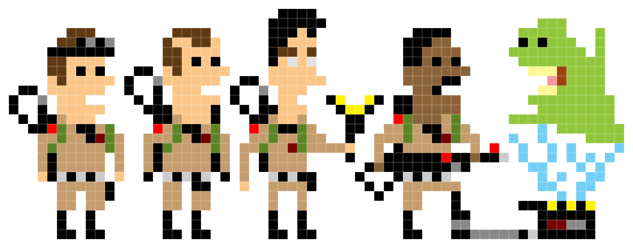

Mockup du jeu
Par Daniel Reis, Daniel Pinto et Florian Walter le XX/04/2021 à XX:XX
Règles du jeu
Le joueur doit créer une équipe en choisissant 4 personnages parmi une sélection de 6 alliés afin de se battre contre la COVID à l'aide d'armes et de compétences uniques. Pour chaque stage, ils devront affronter 3 vagues de monstres + 1 boss dans différents biômes.
Les monstres pourront leur infliger des malus (debuff comme la contamination du covid), ou leur infliger des dégâts afin de raccourcir leur aventure.
Pour gagner, il faut arriver au bout de tous les stages et les différents boss que le jeu propose.
Peut importe la progression des alliés, lorsqu'ils meurent ou que l'aventure est finie, leur progression est sauvegardée dans un tableau "high-score", comme dans les jeux rétro d'arcade, par leur stade dans l'aventure puis leur chrono.
Personnages
Afin de rendre hommage à l'actualité et de respecter l'univers de notre jeu vidéo, nous avons choisi une liste de personnages publiques, certains plus connus que d'autres, qui ont chacun eu un rôle à jouer pendant la pandémie. Bien sûr, les personnages auront des bulles de textes et des armes qui les identifieront pour ajouter une dose d'humour caricaturale qui ne passera pas inaperçue envers les joueurs.
Alliés (6) : Constantin, Berset, Debons, Raoult, Samuel Etienne, Biden
Ennemis (6) : Les chauves-souris, les anti-masques, les malades, les zombies, les gardes armés asiatiques, les gardes armés américains
Boss (3) : Xi Jinping (skin de winnie l'ourson, par rapport à une raillerie des internautes sur la censure en chine), Trump (Il prend la responsabilité de la pandémie à la place de Xi Jinping, par peur de perdre sa production de casquette rouge), la Covid
Style pixel-art des personnages
Animation
Pour le déplacement des personnages, nous utiliserons une animation avec uniquement 2 sprites. On s'inspire du mod d'un fan de Darkest Dungeon, d'après cette vidéo youtube : Lien de la vidéo pour l'animation de mouvement
Pour l'animation des compétences, on utilisera des particules, voici un exemple : Lien de la vidéo pour les particules